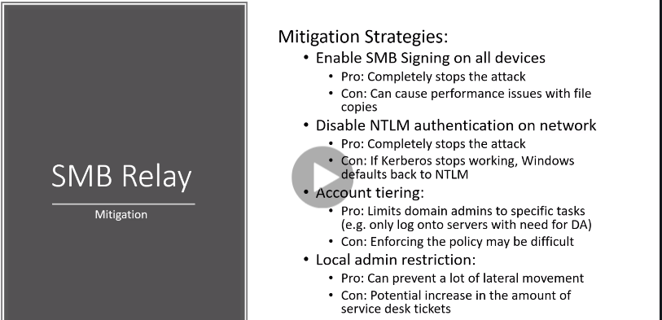

there is around 15% decrease in file transfers when smb signing enabled on all devices
Disabling NTLM not a fool proof method as read its con
Domain adminstrator shouldnt log on to users ke accounts or devices or else uska hash would also be captured
If there isnt local admin then we cant attack it completely liek we can tget a shell